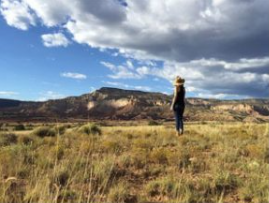

Our Portfolio
-

Most photo editing tools have options for adjusting highlights and shadows. And you need to use this. To improve his nature photography, Cole balanced the exposure by adding light to the shadows and slightly darkening the highlights.
Add light to shadows
App
-

14 Stylish and User-Friendly App Design Concepts · Task Manager App · Calorie Tracker App · Exotic Fruit Ecommerce App · Cloud Storage App
Cashless Payment
Marketing
-

14 Stylish and User-Friendly App Design Concepts · Task Manager App · Calorie Tracker App · Exotic Fruit Ecommerce App · Cloud Storage App
Meditation App
App
-

Landscapes look better when there are people in them. The person in the photograph is capable of conveying feelings. The best example of how people add personality to a photo
Capture people everywhere
Marketing
-

To make things easier for yourself, hold the camera vertically: this makes it easier to fit everything you need for the frame into a square area. Better yet, set up your camera to shoot only square images.
Hold your smartphone vertically when taking pictures
Design
-
These are the ruins of the ancient city of Jerash. If we remove the person from this photograph, we will not feel the scale and grandeur of this structure.
People help convey the scale of objects
Marketing